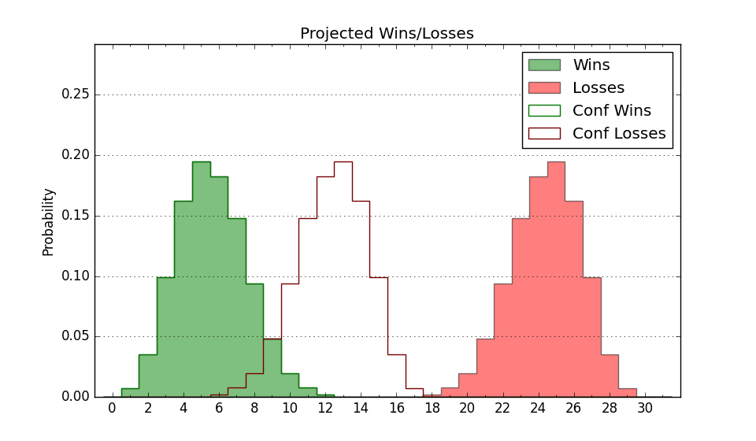

| Home | Game Probabilities | Conferences | Preseason Predictions | Odds Charts | NCAA Tournament |
| City: | Statesboro, Georgia | |
| Conference: | Sun Belt (10th)
| |
| Record: | 5-11 (Conf) 9-15 (Overall) | |
| Ratings: | Comp.: -7.6 (248th) Net: -7.5 (248th) Off: 96.0 (290th) Def: 103.5 (190th) SoR: 0.0 (157th) |
| Remaining | ||||||
|---|---|---|---|---|---|---|
| Date | Opponent | Win Prob | Pred. | |||
| 3/3 | (N) Coastal Carolina (140) | 28.1% | L 62-68 | |||
| Previous | Game Score | |||||
| Date | Opponent | Win Prob | Result | Off | Def | Net |
| 11/9 | Ball St. (264) | 67.8% | W 82-71 | 11.8 | -0.4 | 11.4 |
| 11/13 | @South Florida (243) | 33.2% | W 53-41 | 4.9 | 22.1 | 27.1 |
| 11/20 | (N) Hampton (326) | 70.9% | W 86-66 | 26.2 | -3.6 | 22.5 |
| 11/21 | @Wofford (100) | 10.1% | L 52-70 | -5.6 | -4.8 | -10.5 |
| 11/26 | @Georgia Tech (167) | 19.9% | L 59-61 | -1.4 | 9.5 | 8.2 |
| 12/1 | @Morehead St. (121) | 14.2% | L 51-59 | -3.6 | 5.4 | 1.9 |
| 12/11 | @Mercer (198) | 24.2% | L 68-77 | 1.3 | 1.0 | 2.3 |
| 12/15 | @Campbell (212) | 26.9% | W 69-66 | 7.7 | 8.4 | 16.1 |
| 12/30 | @Little Rock (324) | 56.8% | L 66-78 | -11.4 | -6.9 | -18.3 |
| 1/1 | @Arkansas St. (178) | 21.9% | L 56-74 | -16.9 | 3.7 | -13.2 |
| 1/8 | UT Arlington (230) | 59.6% | W 74-73 | 3.5 | -5.6 | -2.1 |
| 1/15 | @South Alabama (131) | 15.4% | L 67-73 | 10.2 | -1.3 | 8.8 |
| 1/20 | Coastal Carolina (140) | 41.9% | L 72-76 | 10.5 | -14.3 | -3.7 |
| 1/22 | Appalachian St. (162) | 45.5% | L 62-70 | 8.7 | -22.8 | -14.2 |
| 1/27 | @Louisiana Monroe (286) | 42.5% | W 50-45 | -24.2 | 37.7 | 13.6 |
| 1/29 | @Louisiana Lafayette (189) | 22.9% | W 66-65 | 1.2 | 7.2 | 8.4 |
| 2/3 | South Alabama (131) | 38.2% | W 58-57 | -1.9 | 10.3 | 8.4 |
| 2/5 | Troy (186) | 49.8% | L 52-61 | -14.8 | -2.9 | -17.6 |
| 2/10 | @Appalachian St. (162) | 19.7% | L 61-65 | 6.5 | 0.7 | 7.2 |
| 2/12 | @Coastal Carolina (140) | 17.5% | L 58-79 | 0.1 | -12.4 | -12.4 |
| 2/17 | @Georgia St. (171) | 20.9% | L 63-79 | 4.3 | -11.5 | -7.1 |
| 2/19 | Georgia St. (171) | 47.3% | L 49-58 | -21.0 | 5.7 | -15.3 |
| 2/23 | Louisiana Lafayette (189) | 50.3% | L 69-82 | 5.1 | -28.2 | -23.1 |
| 2/25 | Louisiana Monroe (286) | 71.6% | W 81-75 | -2.0 | 3.0 | 0.9 |
| Stats & Trends | |||||
|---|---|---|---|---|---|
| Current | Day | Week | Month | Season | |
| Composite | -7.6 | +0.0 | -0.6 | -3.0 | +2.4 |
| Comp Rank | 248 | -- | -5 | -20 | +57 |
| Net Efficiency | -7.5 | +0.0 | -0.7 | -3.8 | -- |
| Net Rank | 248 | -- | -8 | -31 | -- |
| Off Efficiency | 96.0 | +0.0 | +0.5 | -0.8 | -- |
| Off Rank | 290 | -- | +7 | -23 | -- |
| Def Efficiency | 103.5 | -0.0 | -1.2 | -3.1 | -- |
| Def Rank | 190 | -1 | -26 | -47 | -- |
| SoS Rank | 189 | +1 | -18 | +10 | -- |
| Exp. Wins | 9.0 | -- | -0.3 | -1.1 | +0.4 |
| Exp. Conf Wins | 5.0 | -- | -0.3 | -1.1 | -1.4 |
| Conf Champ Prob | 0.0 | -- | -- | -0.1 | -1.1 |

| Advanced Stats | ||
|---|---|---|
| Stat | Value | Rank |
| Off Eff FG % | 0.476 | 267 |
| Off Ast Ratio | 0.119 | 320 |
| Off ORB% | 0.273 | 195 |
| Off TO Rate | 0.188 | 324 |
| Off FT Ratio | 0.324 | 125 |
| Def Eff FG % | 0.499 | 164 |
| Def Ast Ratio | 0.139 | 161 |
| Def ORB% | 0.310 | 285 |
| Def TO Rate | 0.166 | 152 |
| Def FT Ratio | 0.356 | 291 |